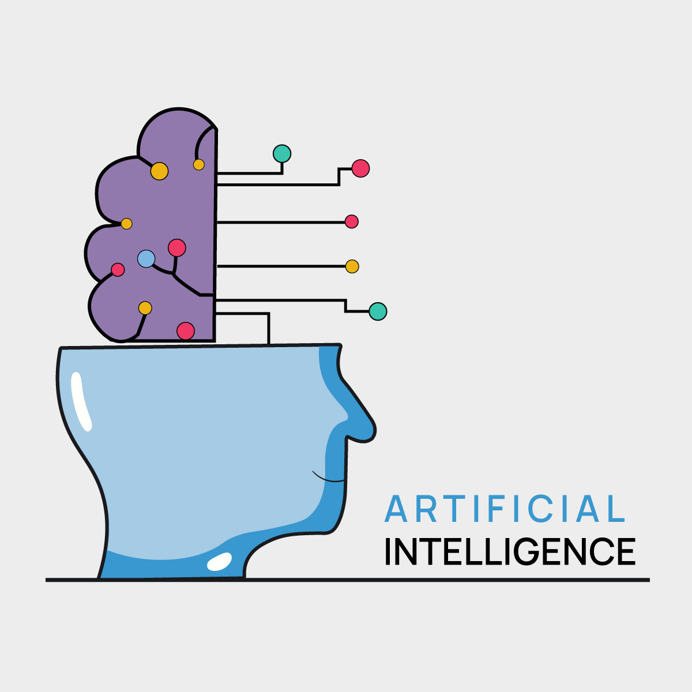

Artificial Intelligence
(AI)Artificial intelligence (AI) refers to the simulation of human intelligence in machines that are programmed to think like humans and mimic their actions. The term may also be applied to any machine that exhibits traits associated with a human mind such as learning and problem-solving.
The ideal characteristic of artificial intelligence is its ability to rationalize and take actions that have the best chance of achieving a specific goal. A subset of artificial intelligence is machine learning, which refers to the concept that computer programs can automatically learn from and adapt to new data without being assisted by humans. Deep learning techniques enable this automatic learning through the absorption of huge amounts of unstructured data such as text, images, or video.
History
The field of AI research was born at a workshop at Dartmouth College in 1956, where the term "Artificial Intelligence" was coined by John McCarthy to distinguish the field from cybernetics and escape the influence of the cyberneticist Norbert Wiener. Attendees Allen Newell (CMU), Herbert Simon (CMU), John McCarthy (MIT), Marvin Minsky (MIT) and Arthur Samuel (IBM) became the founders and leaders of AI research. They and their students produced programs that the press described as "astonishing": computers were learning checkers strategies (c. 1954) (and by 1959 were reportedly playing better than the average human), solving word problems in algebra, proving logical theorems (Logic Theorist, first run c. 1956) and speaking English. By the middle of the 1960s, research in the U.S. was heavily funded by the Department of Defense and laboratories had been established around the world. AI's founders were optimistic about the future: Herbert Simon predicted, "machines will be capable, within twenty years, of doing any work a man can do". Marvin Minsky agreed, writing, "within a generation ... the problem of creating 'artificial intelligence' will substantially be solved".
They failed to recognize the difficulty of some of the remaining tasks. Progress slowed and in 1974, in response to the criticism of Sir James Lighthilland ongoing pressure from the US Congress to fund more productive projects, both the U.S. and British governments cut off exploratory research in AI. The next few years would later be called an "AI winter", a period when obtaining funding for AI projects was difficult.
In the early 1980s, AI research was revived by the commercial success of expert systems, a form of AI program that simulated the knowledge and analytical skills of human experts. By 1985, the market for AI had reached over a billion dollars. At the same time, Japan's fifth generation computer project inspired the U.S and British governments to restore funding for academic research. However, beginning with the collapse of the Lisp Machine market in 1987, AI once again fell into disrepute, and a second, longer-lasting hiatus began.
The development of metal–oxide–semiconductor (MOS) very-large-scale integration (VLSI), in the form of complementary MOS (CMOS) transistor technology, enabled the development of practical artificial neural network (ANN) technology in the 1980s. A landmark publication in the field was the 1989 book Analog VLSI Implementation of Neural Systems by Carver A. Mead and Mohammed Ismail.
In the late 1990s and early 21st century, AI began to be used for logistics, data mining, medical diagnosis and other areas. The success was due to increasing computational power (see Moore's law and transistor count), greater emphasis on solving specific problems, new ties between AI and other fields (such as statistics, economics and mathematics), and a commitment by researchers to mathematical methods and scientific standards. Deep Blue became the first computer chess-playing system to beat a reigning world chess champion, Garry Kasparov, on 11 May 1997.
In 2011, in a Jeopardy! quiz show exhibition match, IBM's question answering system, Watson, defeated the two greatest Jeopardy! champions, Brad Rutter and Ken Jennings, by a significant margin. Faster computers, algorithmic improvements, and access to large amounts of data enabled advances in machine learning and perception; data-hungry deep learning methods started to dominate accuracy benchmarks around 2012. The Kinect, which provides a 3D body–motion interface for the Xbox 360 and the Xbox One, uses algorithms that emerged from lengthy AI research as do intelligent personal assistants in smartphones. In March 2016, AlphaGo won 4 out of 5 games of Go in a match with Go champion Lee Sedol, becoming the first computer Go-playing system to beat a professional Go player without handicaps. In the 2017 Future of Go Summit, AlphaGo won a three-game match with Ke Jie, who at the time continuously held the world No. 1 ranking for two years. Deep Blue's Murray Campbell called AlphaGo's victory "the end of an era... board games are more or less done and it's time to move on." This marked the completion of a significant milestone in the development of Artificial Intelligence as Go is a relatively complex game, more so than Chess. AlphaGo was later improved, generalized to other games like chess, with AlphaZero; and MuZero to play many different video games, that were previously handled separately, in addition to board games. Other programs handle imperfect-information games; such as for poker at a superhuman level, Pluribus (poker bot) and Cepheus (poker bot).
By 2020, Natural Language Processing systems such as the enormous GPT-3 (then by far the largest artificial neural network) were matching human performance on pre-existing benchmarks, albeit without the system attaining commonsense understanding of the contents of the benchmarks. DeepMind's AlphaFold 2 (2020) demonstrated the ability to determine, in hours rather than months, the 3D structure of a protein. Facial recognition advanced to where, under some circumstances, some systems claim to have a 99% accuracy rate.